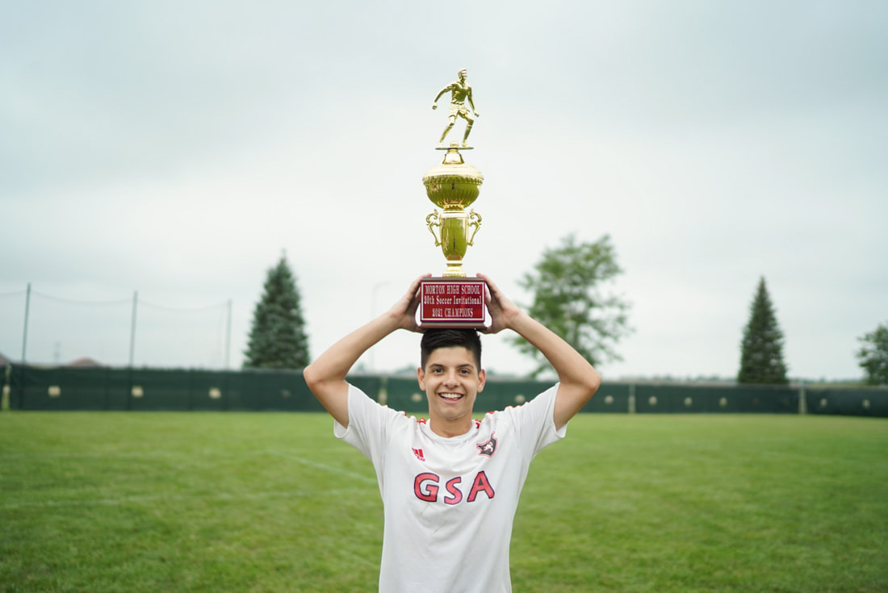
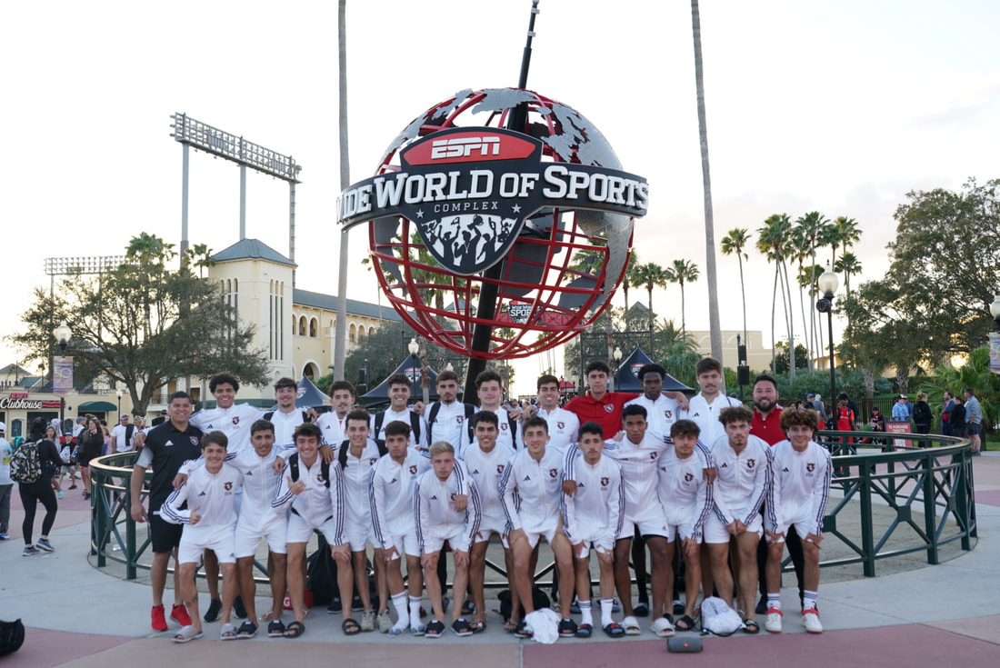

Boarding
Private boarding in a structured, high-support environment built for focus, independence, and growth.
Private boarding high school.
Competitive soccer development.
Character-driven leadership.

Why GSA Prep
GSA Prep combines private boarding, elite training, and high school academics in one serious development environment for student-athletes.

Private boarding in a structured, high-support environment built for focus, independence, and growth.
High-level training designed to develop the complete player through consistent work, competition, and accountability.
A focused private high school education that keeps student-athletes progressing in the classroom while they pursue the game.
High-level soccer development built into the school experience.
A private boarding-school model centered around serious soccer.
School, training, boarding, and support working together every day.
Prepared to compete beyond the local high school level.